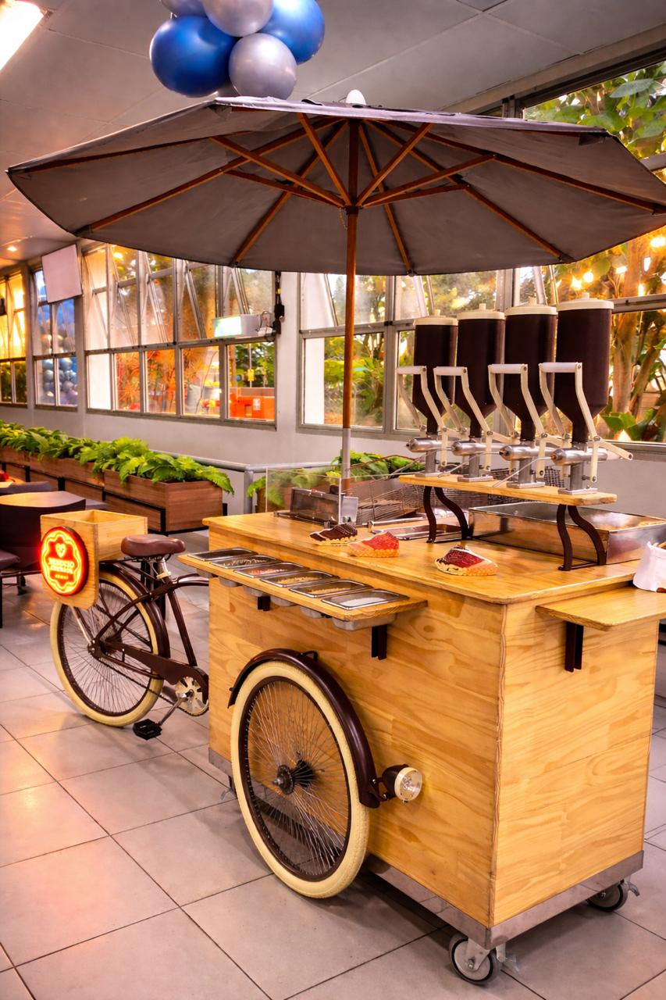
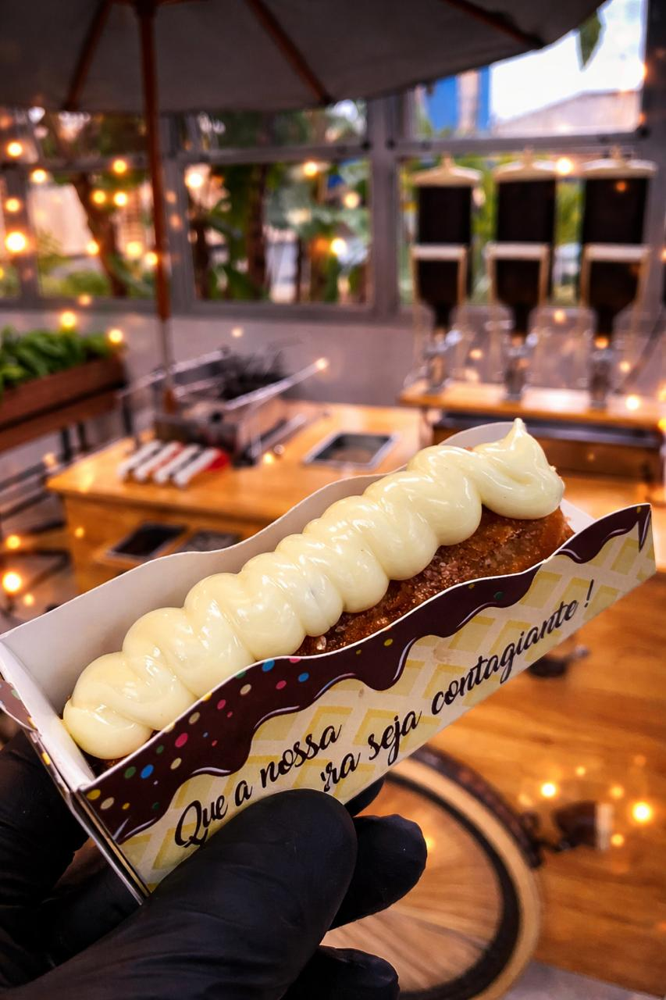
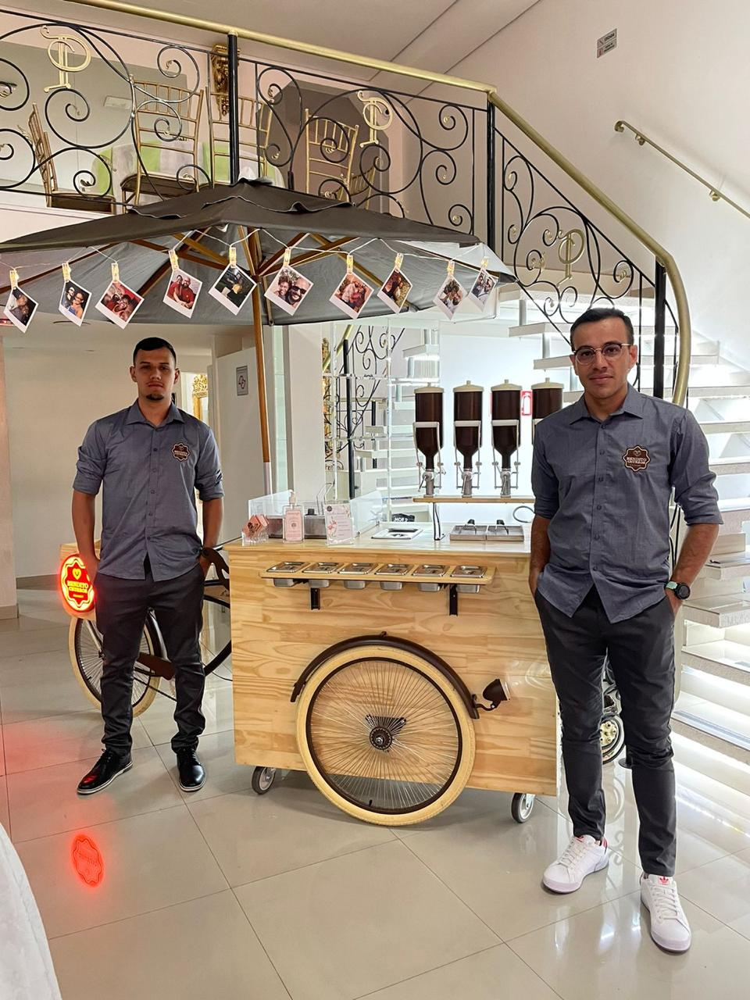

Estação Foodbike Vintage
Mobiliário em pinho artesanal, rodas estilizadas, ombrelone refinado e iluminação cênica acolhedora que harmonizam com decorações clássicas, rústicas e modernas.
◉ Montagem impecável & completaAtendimento personalizado & pontualidade
Levamos o charme afetivo da nossa foodbike artesanal e a perfeição dos churros gourmet preparados na hora. Uma atração memorável para casamentos, mini weddings, galas, aniversários e confraternizações corporativas.

Estrutura & cardápio
Cada detalhe pensado para transformar a hora da sobremesa no ponto alto e mais elogiado do seu evento.
Mobiliário em pinho artesanal, rodas estilizadas, ombrelone refinado e iluminação cênica acolhedora que harmonizam com decorações clássicas, rústicas e modernas.
◉ Montagem impecável & completaMassa sequinha, dourada e crocante frita na hora, recheada fartamente com Doce de Leite, chocolate, Ninho e complementada com toppings selecionados.
◉ Insumos nobres & sabor autênticoAtendentes dedicados, pontuais e com padrão rigoroso de higiene e luvas e adereços, prontos para encantar os convidados com cordialidade e agilidade contínuas.
◉ Postura profissional de salãoGaleria de eventos


Histórias reais de casamentos inesquecíveis, festivais irradiantes e confraternizações corporativas de sucesso.
Amamos o trabalho de vcs, não falo só pela minha família, mas falo pelo nossos convidados tbm, churros delioso, não é enjoativo, massa leve. Realizaram um sonho meu, desde quando vi no Instagram, me apaixonei pela luxuosidade de vcs. Vcs são maravilhosos! Estarão na próxima comemoração com certeza gratidão
Passando pra agradecer o trabalho de vocês! O churros estavam sequinhos e crocante, achei o tamanho ideal, o atendimento também foi ótimo, vocês fizeram toda diferença na festa da minha princesa! Deus abençoe vocês e muito sucesso!
Como cerimonialista, tenho critérios exigentes para fornecedores. A Bendito sempre entrega excelência estética, higiene absoluta e gentileza sem igual. É uma atração que valoriza qualquer projeto decorativo!
Quer ver vídeos ao vivo de outros eventos e depoimentos? Veja nossos destaques no Instagram ↗
Consulte sua data com antecedência
As datas para fins de semana e temporadas de casamentos costumam se esgotar rapidamente. Envie uma mensagem agora para receber nossa proposta personalizada com opções de pacotes para o seu número de convidados.